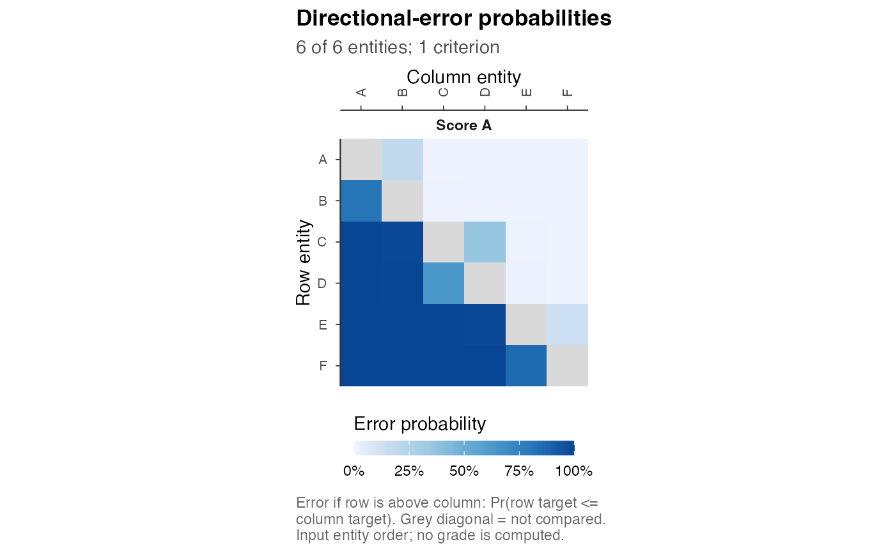
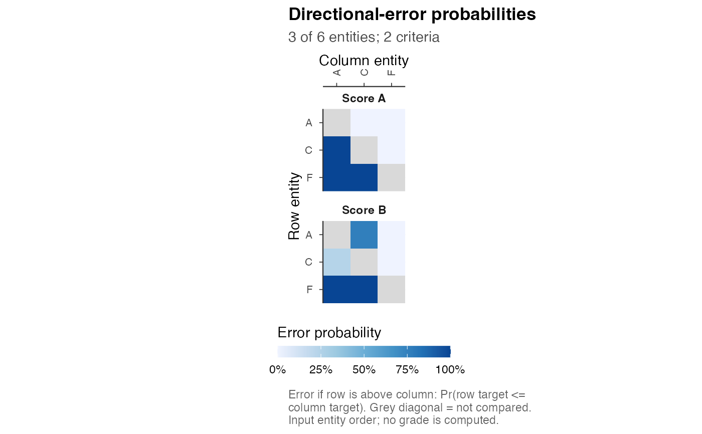

Plot Posterior Directional-Error Probabilities
postrank_plot_pairwise.Rdpostrank_plot_pairwise() draws a square matrix of posterior
directional-error probabilities Pr(row target <= column target) for each
criterion. Each off-diagonal cell gives the posterior expected wrong-direction
error from placing the row entity in a higher-priority grade than the column
entity; diagonal self-comparisons are NA and drawn in gray.
Usage
postrank_plot_pairwise(
x,
criteria = NULL,
entities = NULL,
max_entities = 20L,
entity_labels = NULL,
criterion_labels = NULL,
ncol = NULL
)Arguments
- x
A
postrank_analysis,postrank_fit,postrank_pairwise(including objects frompostrank_probabilities()), orpostrank_coefficients. Rawpostrank_draws(convert withpostrank_pairwise()first) and tie-mode inputs (postrank_tie_*) are not accepted.- criteria
Optional character vector of distinct criterion IDs from
x, giving the subset and panel order.NULL(the default) shows all criteria in stored order.- entities
Optional character vector of at least two distinct entity IDs from
xto display. Axis order follows the stored result or input order, notentities.- max_entities
Integer cap of at least
2on automatically displayed entities (20Lby default), orNULLto show all entities. Ignored whenentitiesis supplied.- entity_labels, criterion_labels
Optional named character vectors mapping raw IDs to display labels. Unmapped criterion IDs replace underscores with spaces unless that creates duplicate labels. Final labels must be distinct;
$datakeeps raw IDs.- ncol
Positive integer number of facet columns;
NULL(the default) usesmin(2, length(criteria_shown)).
Value
A ggplot object whose $data table contains entity_i,
entity_j, criterion, and error_probability for the displayed entities
and criteria.
Details
Larger target values mean higher priority, so a small value in row i,
column j supports placing entity i above entity j. Because ordinary
postrank inputs have zero posterior probability of exact ties, opposite
off-diagonal cells (i, j) and (j, i) sum to 1. Cells show posterior
comparison probabilities rather than chosen grades; see
postrank_plot_relations() for the pairs ordered or withheld by a grading.
The plot reads prepared probabilities without aggregating draws, solving, or
evaluating a grading, so a postrank_fit without a checked grading can still
display its input probabilities. Entity order uses the report card's stored
order when x is an analysis with a prepared card, grade-then-ID order for
other checked fits or analyses, and input entity order otherwise.
When entities is NULL and x has more than max_entities entities,
deterministic display selection spreads rows across stored grades (when
available) or across input order for visual layout only. Use
postrank_plot_data(x, "pairwise") for the complete n * n * K table.
Examples
postrank_plot_pairwise(
pr_tutorial$one,
criterion_labels = c(score_A = "Score A")
)

Open full-size figure
postrank_plot_pairwise(
pr_tutorial$two,
entities = c("A", "C", "F"),
ncol = 1,
criterion_labels = c(score_A = "Score A", score_B = "Score B")
)

Open full-size figure